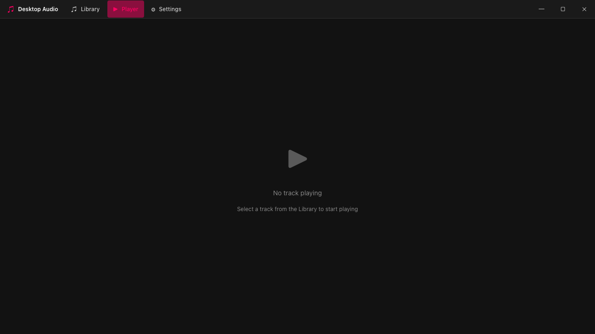
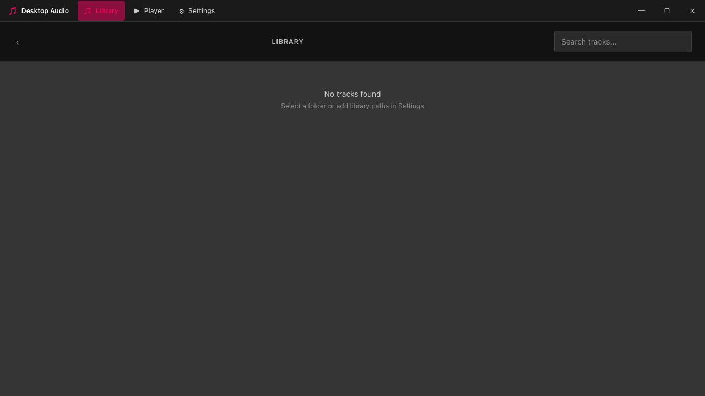

Library Management
Scan folders, browse folder trees, and search through your music collection.
Screenshots captured from the running application
Scan folders, browse folder trees, and search through your music collection.
Real-time waveform progress bars generated from audio file data.
Full MediaSession API support — play, pause, next, previous from your OS.
The interface is designed to be non-obtrusive — compact, responsive, and usable even on smaller screens. Controls stay out of your way until you need them, and the layout adapts so nothing ever feels cramped.


Even a music library with few to no metadata looks and feels perfectly fine — tracks are organized, searchable, and browsable regardless. But when you have metadata? It feels incredible AF. Album art, artists, genres — everything snaps into place beautifully.
Free and open source — download the latest release or browse the source.